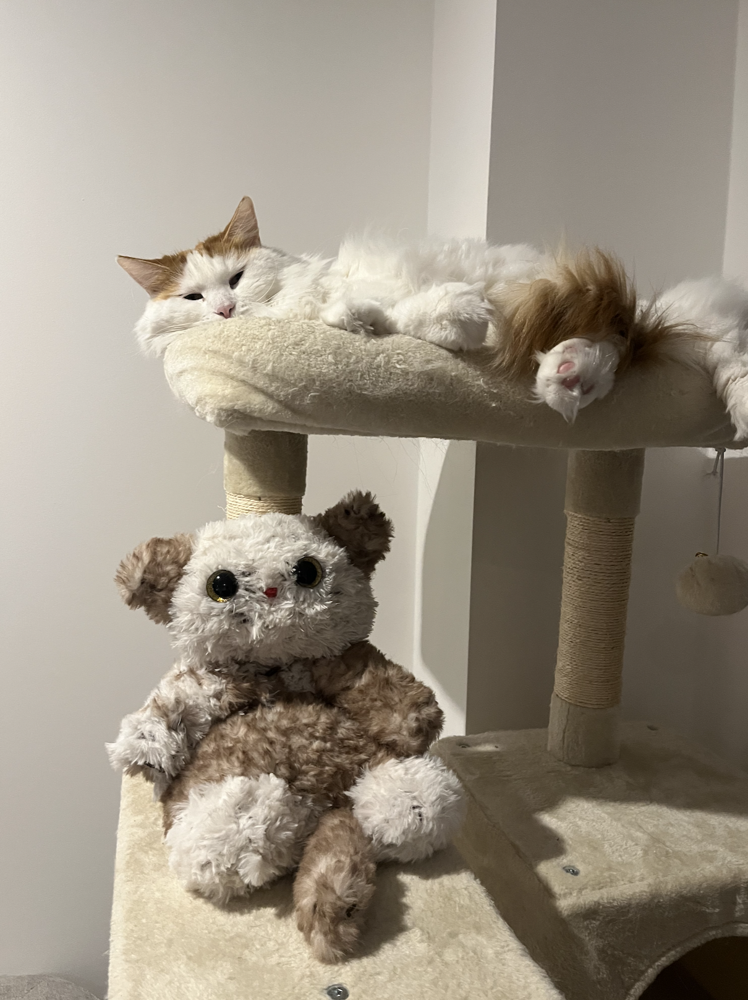
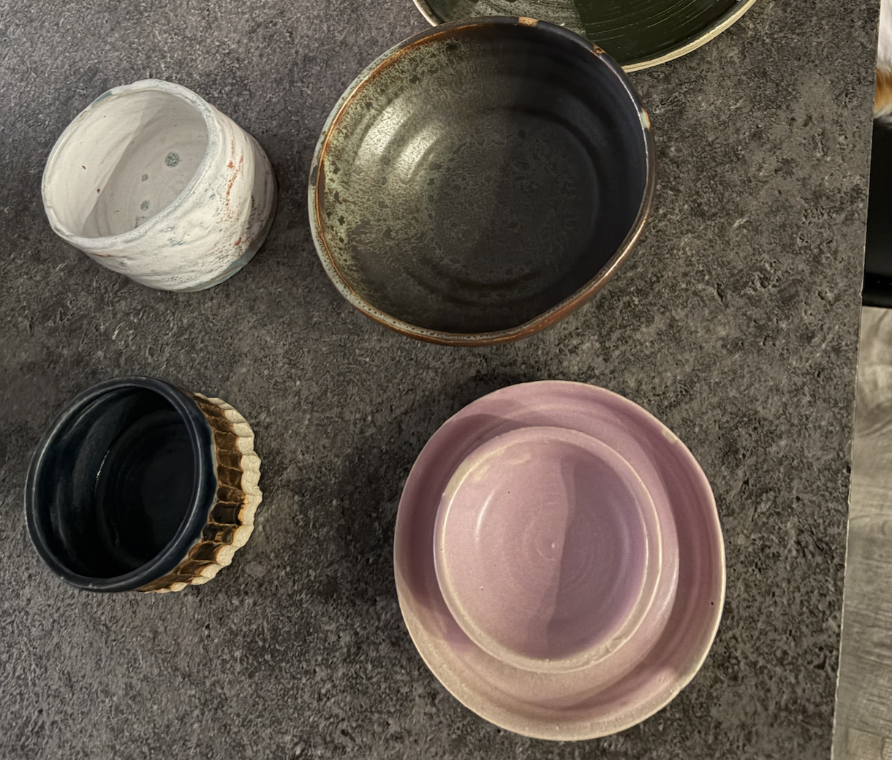

HealthQo: An SMS-Based Mental Health Service for Underserved Communities
COVID-19 worsened mental health outcomes across South Asia. Founded HealthQo, an SMS-based AI service needing no app or internet - MIT hackathon winner, incubated at MIT Node.
// enter password
Not quite — try again.
// data analyst · product manager
I've been working for over five years across data, product, and everything in between. I've worked across a wide range of industries and problems throughout my career. I love solving problems, I'm logical and creative, and an idea machine!
// roughly where things land
// selected work
COVID-19 worsened mental health outcomes across South Asia. Founded HealthQo, an SMS-based AI service needing no app or internet - MIT hackathon winner, incubated at MIT Node.
Led a cross-functional team as Scrum Master and Product Owner across discovery, roadmap and delivery of two data products in a highly regulated financial-services environment, impacting 20M+ users.
Independently built a data requirements automation solution for a Big Pharma client - an 85% time reduction that turned into new consultancy revenue.
A ground-up redesign - discovery, statistical playbook, governance automation, and org-wide training. Became the primary internal expert, turning testing into a trusted ship/iterate/stop standard.
Led build, delivery and adoption to enable precise targeting across 15+ markets - running workshops, managing user testing, and delivering feature builds, user stories and technical docs for every release.
Supported an enterprise AI platform build with a major data and AI provider and NHS Solutions Exchange use-case validation, ran workshops to shape an AI costing tool, and crafted its business materials - moving it into commercial NHS conversations.
Pre-processed data, ran QA/KPI validation, and built base econometric models across multiple markets and vehicle lines - giving the client validated models to guide media investment with confidence.
Built features for a dynamic Python/Streamlit dashboard analysing promotional effectiveness, and running scenario analyses to inform ROI decisions.
Owned the business case for a national data store- 20+ stakeholder interviews, current-state systems analysis, and director-only workshops. Secured executive buy-in and VP-level recognition.
personal project
A personal iOS app in React Native/Expo, built solo around two adaptive modes - Hard Day and Good Day - designed for cognitive overload, not just productivity.
personal project
Designing a social reading app with private clubs, chapter-gated chat, and a way to discover niche reading communities worldwide.
Programmed SoftBank's Pepper with speech and emotion recognition to simulate interview practice, giving real-time feedback on tone, pace and filler words.
Designed an AR concept using ARKit and RealityKit to make therapeutic and learning materials more engaging and adaptive for differently-abled children.
Designed a grocery-sharing and budgeting app tackling food waste through portion flexibility and community-driven sharing, validated through user testing.
// how I got here
Scroll sideways →
2019 project
AR prototype augmenting paper-based learning materials for differently-abled children.
2019 project
Interactive sustainability app addressing food waste through portion and grocery sharing.
2019 project
Human-robot interaction project: Pepper robot programmed for interview-skills coaching.
2020 project
Founded an SMS based AI mental health triage service for underserved communities during COVID-19; MIT hackathon winner.
2021 – 2023 job
Econometric modelling and insight strategy across global clients.
2022 project
Cross-market econometric modelling for a global luxury vehicle manufacturer's media investment strategy.
2022 project
Selected for PAC 2022, an internationally regarded media training course at Oxford University.
2023 - 2025 job
Client engagements spanning financial services, healthcare, pharma and FMCG.
2023 project
Worked on an audience segmentation tool - building and driving adoption across 15+ markets.
2024 project
Led business case for a UK government national data store.
2024 project
Winning healthcare hackathon - predictive models and AI sentiment dashboard for NHS staffing and retention.
2024 project
Scrum Master & Product Owner on £1M data modernisation programme, 20+ developers & 20M+ users of 2 digital apps impacted.
2024 project
Developed a promotion optimisation dashboard (Python, Streamlit) with scenario analyses.
2024 project
Supported in enterprise AI platform build and NHS Solutions Exchange use case validation.
2025 project
Independently built a data requirements automation solution resulting in 85% reduction in process time.
2025 - Present job
Retention, conversion and experimentation analytics ownership.
2026 project
End-to-end redesign of Zava's experimentation programme - statistical playbook, governance automation, and org-wide training.
2026 project
Personal iOS productivity app built around hard-day cognitive load, not conventional productivity.
2026 project
Designing a social/digital book club app - private clubs, chapter-gated chat, and discovery of reading communities.
// just for fun

Crocheted a soup belly cuddly cat for a gift.
This doesn't look anything at all like the inspiration and I had to restart it 3 times, but I still love it.

A number of pottery dishes made across a month.
I went in with high expectations, and this was surprisngly more stressful than calming ... the only thing being used actively is the bowl.

First completed crochet project for my expecting friend.
Believe it or not, the full pattern requires 16 of these squares ... I stopped at 1.
// about me
I was born and raised in Hong Kong, and have made my home in London since. I'm a city girl who's completely in love with mountains and beaches. If I'm interested in something, I will just go and try it, and I'll try it at least twice! I taught myself to code Tumblr blog templates and edit in Photoshop, and more recently it's been various dance classes. I've got an imaginative brain and don't impose limits on myself. The world truly is your oyster. I've been an avid reader, love arts & crafts, want to travel as much as I can and have a massive cat!